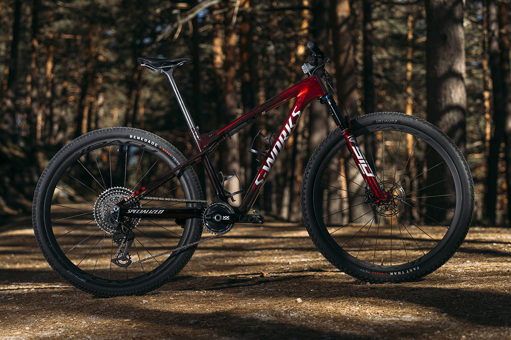
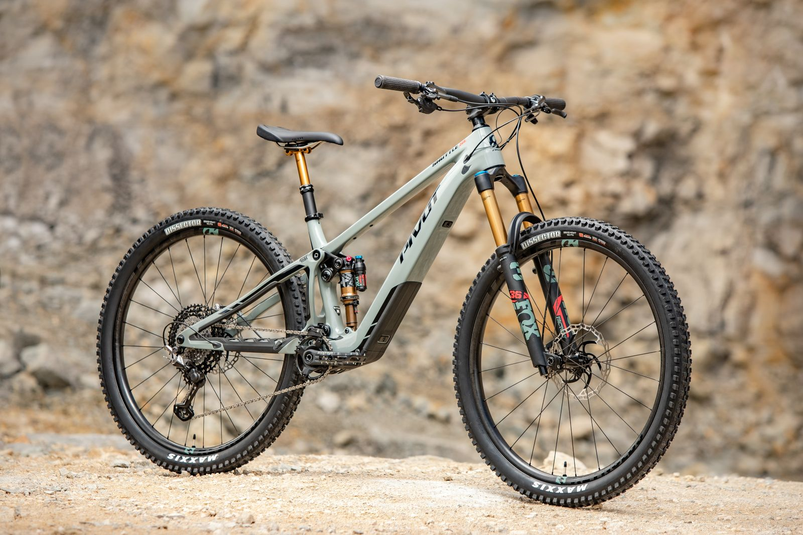

Noticias de Interes

Specialized Lanza su nueva bicicleta para MTB
Specialized presenta la nueva Specialized Epic World Cup, una máquina de carreras XCO y XCM con un nuevo esquema de suspensión trasera que prescinde del Brain o cualquier bloqueo, fía su comportamiento a un nuevo y específico amortiguador con recorridos de 110 mm delante y 75 mm detrás.

Las E-Bicis llegan al MTB
El enduro eléctrico es una tendencia que está ganando cada vez más popularidad en el mundo del mountain bike.Las bicicletas de enduro eléctricas cuentan con un motor eléctrico que les permite subir más fácilmente las cuestas y llegar a lugares que antes eran inaccesibles.